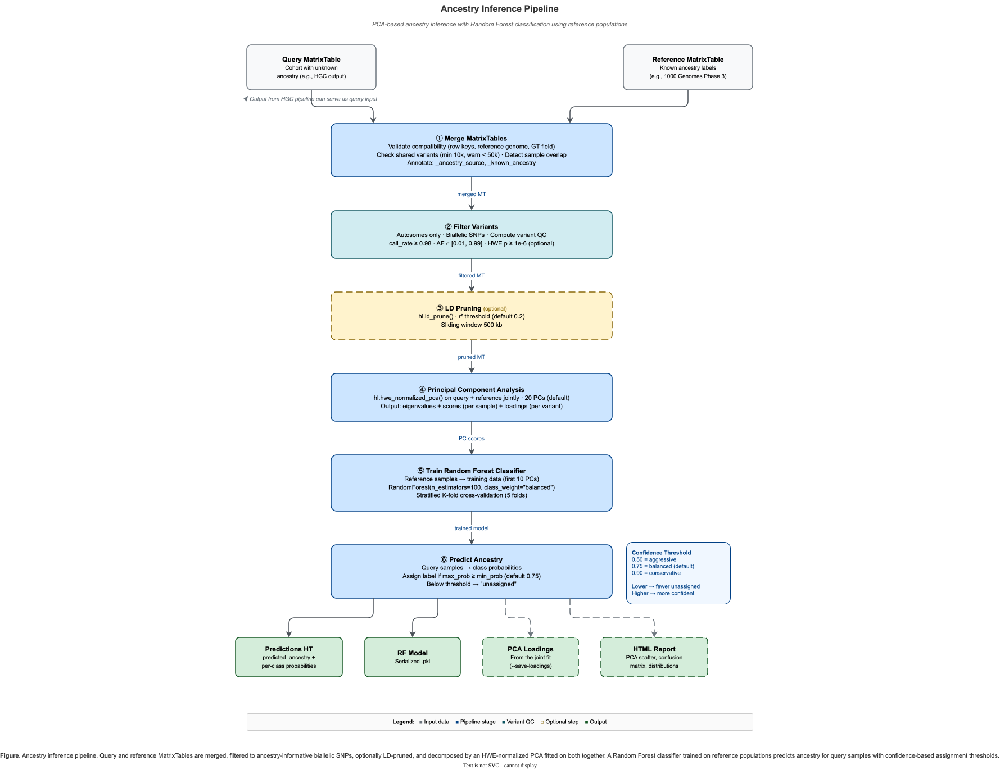

Ancestry inference¶
hvantk ancestry-inference assigns a population label to each sample in a query cohort
by projecting it against a labeled reference panel (e.g. 1000 Genomes) with PCA, then
classifying with a Random Forest trained on the reference panel's known labels.

Figure 1. Ancestry inference: merge with the reference panel, variant filtering, optional LD pruning, PCA fitted on query and reference together, Random Forest training and prediction.
Inputs¶
| Row key | Column key | Required fields | |
|---|---|---|---|
| Query MatrixTable | (locus, alleles) |
s (sample ID) |
GT genotype calls (or LGT + LA, auto-converted) |
| Reference MatrixTable | same as query | s |
GT/LGT as above, plus a categorical ancestry-label column |
- Query and reference must use the same reference genome (GRCh37 or GRCh38) and the same row key structure; mismatches fail immediately with a descriptive error.
- The reference panel's ancestry-label column is named by
--ancestry-col(ancestry_colin Python), defaultancestry. It must be a column field on the reference MatrixTable, categorical (e.g."EUR","AFR","EAS","SAS","AMR"), with at least 2 distinct populations and at least 10 samples per population (lower viaPipelineConfig(min_samples_per_pop=...)in Python; there is no CLI flag for it). - hvantk ships no reference panel. To build a 1000 Genomes high-coverage NYGC/CCDG
MatrixTable and attach IGSR population labels (
super_pop/pop) to use as--ancestry-col, see the 1000 Genomes example and Data sources. Other commonly used panels are 1000 Genomes Phase 3 (2,504 samples, 5 super-populations) and HapMap Phase 3 (1,184 samples, 11 populations) — bring your own copy, keyed and labeled the same way.
Quick start¶
hvantk ancestry-inference \
-q cohort.mt \
-r 1kg_reference.mt \
--ancestry-col super_pop \
-o ancestry_predictions.ht \
--generate-report \
--export-tsv
import hail as hl
from hvantk.algorithms.ancestry import run_ancestry_inference
result = run_ancestry_inference(
query_mt=hl.read_matrix_table("cohort.mt"),
reference_mt=hl.read_matrix_table("1kg_reference.mt"),
ancestry_col="super_pop",
min_prob=0.75,
)
predictions = result.get_predictions_df()
print(predictions["predicted_ancestry"].value_counts())
result.save("results/ancestry")
Method¶
- Merge. Inner join query and reference on
(locus, alleles); keep only theGTentry field; column-union the samples, tagging each with its source (queryorreference). Fails if there are 0 shared variants, or fewer than--min-shared-variants(default 10,000); warns below 50,000. - Filter. Restrict to autosomes (
locus.in_autosome()), then biallelic SNPs, then apply Hail'svariant_qc: call rate ≥--min-call-rate(default 0.98) and alternate-allele frequency between--min-af/--max-af(default 0.01/0.99). An optional HWE filter (off by default;--apply-hwe-filter, p ≥--hwe-p, default 1e-6) can additionally drop likely genotyping errors. - LD prune (skippable with
--skip-ld-pruning).hl.ld_pruneonGTwithr2=--ld-r2(default 0.2) andbp_window_size=--ld-window(default 500,000). - PCA.
hl.hwe_normalized_pca(Patterson et al., 2006) computes--n-pcs(default 20) principal components jointly on the merged query+reference set — this is not a projection of the query onto a reference-only PC space; query and reference samples share one PCA fit. Loadings are always computed in memory;--save-loadings/result.loadingspersist them (see caveats below). - Train. A
RandomForestClassifier(n_estimators=--n-estimators, default 100;random_state=--seed, default 42) is fit on the reference rows' first--n-pcs-classifyPC scores (default 10) against their known--ancestry-collabels.max_features="sqrt",min_samples_leaf=5,class_weight="balanced"andn_jobs=-1are fixed and not configurable. Unless--skip-validation, a stratified--n-cv-folds-fold cross-validation (default 5) gives a held-out accuracy estimate; this raises ifn_cv_foldsexceeds the smallest population's sample count. - Predict. The fitted model scores the query rows' PC scores. A sample's label
is the highest-probability class if that probability is ≥
--min-prob(default 0.75), otherwise"unassigned". Reference rows are also re-scored (with no threshold) for reporting and plotting — this is an in-sample fit, not the cross-validated estimate from step 5.
For a fixed reference PC space that later query batches project onto (the approach
gnomAD and similar projects use), call compute_pca() on the reference alone and
project_samples() with its loadings, instead of run_ancestry_inference's joint PCA.
See Python API.
Options¶
Required¶
| Flag | Description |
|---|---|
-q, --query-mt |
Path to the query MatrixTable. |
-r, --reference-mt |
Path to the reference MatrixTable with known ancestry labels. |
-o, --output-ht |
Output path for the predictions Hail Table. |
Reference panel and output¶
| Flag | Default | Description |
|---|---|---|
--ancestry-col |
ancestry |
Column with ancestry labels in the reference MT. |
--output-dir |
<output-ht parent>/ancestry_results |
Directory for TSV/model/report/stats outputs. |
Variant filtering¶
| Flag | Default | Description |
|---|---|---|
--min-af |
0.01 |
Minimum alternate-allele frequency. |
--max-af |
0.99 |
Maximum alternate-allele frequency. |
--min-call-rate |
0.98 |
Minimum variant call rate. |
--apply-hwe-filter |
off | Apply a Hardy-Weinberg equilibrium filter. |
--hwe-p |
1e-6 |
HWE p-value threshold (variants below are removed). |
LD pruning¶
| Flag | Default | Description |
|---|---|---|
--ld-r2 |
0.2 |
LD pruning r² threshold. |
--ld-window |
500000 |
LD pruning window, in base pairs. |
--skip-ld-pruning |
off | Skip LD pruning (faster; may affect accuracy). |
PCA and classification¶
| Flag | Default | Description |
|---|---|---|
--n-pcs |
20 |
Number of principal components to compute. |
--n-pcs-classify |
10 |
Number of PCs used as RF features (clamped to --n-pcs if larger). |
--n-estimators |
100 |
Number of trees in the Random Forest. |
--min-prob |
0.75 |
Minimum probability for an assignment; below this, "unassigned". |
--seed |
42 |
Random seed. |
Validation and merge¶
| Flag | Default | Description |
|---|---|---|
--skip-validation |
off | Skip cross-validation. |
--n-cv-folds |
5 |
Number of stratified CV folds. |
--min-shared-variants |
10000 |
Minimum shared query/reference variants required. |
Output formats and checkpointing¶
| Flag | Default | Description |
|---|---|---|
--generate-report |
off | Write an HTML report (needs the visualization extras). |
--export-tsv |
off | Export predictions as TSV. |
--save-model |
off | Pickle the trained Random Forest. |
--save-loadings |
off | Write the PCA loadings Hail Table. |
--checkpoint-path |
none | Directory for intermediate checkpoints. |
--overwrite |
off | Overwrite existing outputs and checkpoints. |
There is no --log-level option. Verbosity is the top-level flag, which must come
before the subcommand: hvantk -v ancestry-inference ... (INFO) or
hvantk -vv ancestry-inference ... (DEBUG).
Outputs¶
Predictions Hail Table (-o/--output-ht)¶
Row-keyed by s, containing both query and reference samples
(_ancestry_source distinguishes them):
| Field | Type | Description |
|---|---|---|
predicted_ancestry |
str |
Assigned population label, or "unassigned". |
ancestry_probability |
float |
Maximum class probability. |
prob_<POP> |
float |
Per-population probability, one column per class. |
PC1...PC<n_pcs_classify> |
float |
The PCs used for classification (not all --n-pcs computed — see Method). |
_ancestry_source |
str |
"query" or "reference". |
_known_ancestry |
str |
Original label (reference rows only; missing for query). |
Additional files (under --output-dir)¶
| File | Written when |
|---|---|
predictions.tsv |
--export-tsv (same columns as the predictions table). |
rf_model.pkl |
--save-model. |
pca_loadings.ht |
--save-loadings (loadings from the joint PCA — see caveats). |
ancestry_report.html |
--generate-report. |
pipeline_stats.json |
always. |
result.save(output_path, save_model=True, save_loadings=True) (Python only) writes a
related but not identical set directly under output_path: predictions.ht and
predictions.tsv unconditionally, pc_scores.ht (all --n-pcs PCs, for every
sample) unconditionally, rf_model.pkl/pca_loadings.ht unless disabled, and
pipeline_stats.json — the last one additionally carries an "eigenvalues" key that
the CLI's own pipeline_stats.json does not.
HTML report (--generate-report)¶
Summary cards (query/reference sample counts, assigned/unassigned, populations, shared variants); an ancestry distribution table and bar chart; a two-panel PCA plot (full view + one zoomed population) plus a variance-explained chart; cross-validation accuracy and confusion matrix (or a notice that validation was skipped); a probability-distribution histogram; a table of the top query predictions by probability; and the full pipeline configuration.
Python API¶
from hvantk.algorithms.ancestry import run_ancestry_inference, PipelineConfig
result = run_ancestry_inference(
query_mt: hl.MatrixTable,
reference_mt: hl.MatrixTable,
ancestry_col: str = "ancestry",
config: PipelineConfig = None,
**kwargs, # overrides individual PipelineConfig fields, e.g. min_prob=0.80
) -> AncestryInferenceResult
PipelineConfig fields mirror the CLI options above 1:1, plus min_samples_per_pop
(default 10, Python-only — no CLI flag).
AncestryInferenceResult methods:
# Data access
result.get_predictions_df() -> pd.DataFrame
result.get_scores_df() -> pd.DataFrame # all computed PCs, every sample
result.get_query_predictions() -> pd.DataFrame
result.get_reference_predictions() -> pd.DataFrame
result.get_accuracy() -> float | None # cross-validation accuracy
result.variance_explained() -> list[float]
result.prediction_summary() -> dict[str, int] # query-only counts by predicted_ancestry
# Visualization (each returns a matplotlib Figure, or None if not applicable)
result.plot_pca(pc_x=1, pc_y=2, show_query_as_undefined=False, **kwargs)
result.plot_pca_panel(show_query_as_undefined=False, **kwargs)
result.plot_ancestry_proportions(**kwargs)
result.plot_probability_distribution(**kwargs)
result.plot_variance_explained(n_pcs=10, **kwargs)
result.plot_confusion_matrix(normalize=True, **kwargs) -> Figure | None
# Output
result.generate_report(output_path, title="Ancestry Inference Report", **kwargs) -> Path
result.save(output_path, save_model=True, save_loadings=True) -> dict[str, str]
# MatrixTable annotation
result.annotate_matrixtable(mt: hl.MatrixTable) -> hl.MatrixTable
annotate_matrixtable adds predicted_ancestry, ancestry_probability and
PC1...PC<n_pcs_classify> column annotations to mt, joined on its column key —
useful for an ancestry-stratified downstream analysis:
annotated_mt = result.annotate_matrixtable(query_mt)
eur_mt = annotated_mt.filter_cols(annotated_mt.predicted_ancestry == "EUR")
Advanced: projecting onto a fixed reference PC space. run_ancestry_inference
always fits PCA jointly. To instead fit PCA on the reference only and project query (or
later) samples onto that fixed space without recomputing it:
from hvantk.algorithms.ancestry import compute_pca, project_samples
pca_result = compute_pca(reference_mt_filtered, n_pcs=10, compute_loadings=True)
query_scores = project_samples(query_mt_filtered, loadings=pca_result.loadings, n_pcs=10)
project_samples requires the loadings table to carry an af field (present when
compute_pca ran with variant_qc annotated, which it is here); it is not called by
run_ancestry_inference itself.
Interpretation and caveats¶
- Joint PCA, not reference-fixed projection. The default pipeline's PCA axes are
influenced by the query cohort, not just the reference. A query batch run twice
(alone, and alongside a different second batch) can land at slightly different PC
coordinates. If you need a stable, reusable PC space across runs, use the
compute_pca()+project_samples()path above instead. --save-loadingssaves the joint run's loadings, not a reference-only fit. Using them later withproject_samples()projects onto this run's combined PC space, not a clean reference-only one.- The variant-frequency filter is on alternate-allele frequency, not minor allele
frequency — a variant with alt AF 0.95 passes the default
--max-af 0.99filter even though its minor allele frequency is 0.05. - Random Forest hyperparameters are mostly fixed. Only tree count (
--n-estimators) and the random seed are configurable;max_features,min_samples_leafandclass_weight="balanced"are not exposed. --min-probis inclusive: a probability exactly equal to the threshold is assigned, not marked unassigned.
| Threshold | Behavior |
|---|---|
| 0.50 | Aggressive; may misclassify admixed individuals. |
| 0.75 | Balanced (default). |
| 0.90 | Conservative; more "unassigned" but higher confidence. |
- Reference rows'
predicted_ancestryin the output table is an in-sample prediction from the model trained on all reference data, not a held-out estimate. For an honest accuracy figure, useresult.get_accuracy()or the report's confusion matrix, both from cross-validation.
Troubleshooting¶
No shared variants, or too few. merge_matrixtables raises if query and reference
share 0 variants (check both use the same reference genome and that variants are
normalized the same way) or fewer than --min-shared-variants (default 10,000) — the
error names the actual count. Lowering the threshold is possible but not recommended;
a genotyping-platform mismatch is a more likely root cause than a bad threshold.
A population has too few samples. Training requires at least 2 populations and
min_samples_per_pop (default 10, Python-only) samples in each; the error names the
underprovisioned population(s). Merge rare populations into a broader label, or exclude
them from the reference panel.
KeyError: 's' while merging or predicting. Both MatrixTables must have their
column key named literally s (Hail's import_vcf default). Re-key with
mt.key_cols_by("s") (renaming the existing key field first if needed) before calling
run_ancestry_inference.
Many samples "unassigned". Likely admixed individuals, or a query cohort that
does not match the reference panel's populations well. Try a lower --min-prob, or
check that the panel actually covers your cohort's ancestries.
Cross-validation accuracy is low. Reference populations may overlap in PC space.
Try more PCs (--n-pcs-classify 15 or higher, up to --n-pcs) or a panel with better
population separation; some populations (e.g. closely related regional groups) are
inherently hard to separate from PCA alone.
Large datasets. Use --checkpoint-path so a failed run can resume past the
expensive merge/filter/LD-prune/PCA steps; --skip-ld-pruning if variants are already
LD-pruned; and fewer --n-pcs if memory-constrained.
References¶
- Patterson N, Price AL, Reich D. (2006). Population structure and eigenanalysis. PLoS Genet. 2(12):e190.
- Price AL, et al. (2006). Principal components analysis corrects for stratification in genome-wide association studies. Nat Genet. 38(8):904-9.
- 1000 Genomes Project Consortium. (2015). A global reference for human genetic variation. Nature. 526(7571):68-74.
See also¶
- Ancestry examples - runnable CLI and Python scripts, including synthetic test data.
- 1000 Genomes example - build a reference panel MatrixTable and attach population labels.
- HGC joint genotyping - build a cohort MatrixTable to use as the query input.
- Architecture - project architecture.